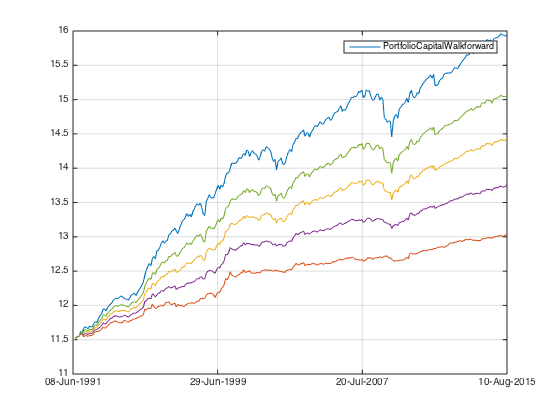

Combined Factors - descend from extraordinary to decent reality (Neutral)
In this post I will exam what happens when reality kicks in. Since I already have good idea about reality for long only strategy, I will focus on neutral strategies here.
Contents
Preparation
Let's load the data from ..
load('../data_equity_list_us.mat'); load('../data_field_list.mat'); load('../data_historical_data_us.mat'); load('../rfr_ts.mat'); load('../cap_benchmark_ts.mat'); load('../spx_ts.mat');
take data sample, load data & the list
index = datasample(1:1300,1000,'Replace',false);
px = fun_load_price(history_us, equity_list_us, index);
px = fun_clean_data(px);
list = equity_list_us(index,:);
load observations
mom_ts = fun_calculate_mom(px); pb_ts = fun_load_observations(history_us, equity_list_us, index,'pb'); cap_ts = fun_load_observations(history_us, equity_list_us, index,'cap'); beta_ts = fun_load_observations(history_us, equity_list_us, index,'beta'); grossmargin_ts = fun_load_observations(history_us, equity_list_us, index,'gm'); turnover_ts = fun_load_observations(history_us, equity_list_us, index,'turnover'); roa_ts = fun_load_observations(history_us, equity_list_us, index,'roa'); leverage_ts = fun_load_observations(history_us, equity_list_us, index,'leverage');
calculate score
score_mom_ts = fun_calculate_score(mom_ts,list,'sectorsort',px); score_pb_ts = -fun_calculate_score(pb_ts,list,'sectorsort',px); score_cap_ts = -fun_calculate_score(cap_ts,list,'sectorsort',px); score_beta_ts = -fun_calculate_score(beta_ts,list,'sectorsort',px); score_leverage_ts = -fun_calculate_score(leverage_ts,list,'sectorsort',px); score_roa_ts = fun_calculate_score(roa_ts,list,'sectorsort',px); score_grossmargin_ts = fun_calculate_score(grossmargin_ts,list,'sectorsort',px); score_turnover_ts = fun_calculate_score(turnover_ts,list,'sectorsort',px); % score_leverage_ts = fillts(score_leverage_ts,0); % score_roa_ts = fillts(score_roa_ts,0); % score_grossmargin_ts = fillts(score_grossmargin_ts,0); % score_turnover_ts = fillts(score_turnover_ts,0); score_quality_ts = score_leverage_ts+score_roa_ts+score_grossmargin_ts+score_turnover_ts; score_quality_ts = fun_combine_score(score_quality_ts);
Trim
score_roa_ts = score_roa_ts(75:end); score_leverage_ts = score_leverage_ts(75:end); score_grossmargin_ts = score_grossmargin_ts(75:end); score_turnover_ts = score_turnover_ts(75:end); score_mom_ts = score_mom_ts(75:end); score_pb_ts = score_pb_ts(75:end); score_cap_ts = score_cap_ts(75:end); score_beta_ts = score_beta_ts(75:end); score_quality_ts = score_quality_ts(75:end); % score_mom_ts = fillts(score_mom_ts,0); % score_pb_ts = fillts(score_pb_ts,0); % score_cap_ts = fillts(score_cap_ts,0); % score_beta_ts = fillts(score_beta_ts,0); % score_quality_ts = fillts(score_quality_ts,0); score_ts = {score_mom_ts; score_pb_ts; score_cap_ts; score_beta_ts; score_quality_ts}; px = px(75:end);
Combine score
score_weight = [0.2 0 0.4 0.1 0.3]; score_combined_ts = score_mom_ts*score_weight(1) + score_pb_ts*score_weight(2) + score_cap_ts*score_weight(3) + score_beta_ts*score_weight(4) + score_quality_ts*score_weight(5); score_combined_ts = fun_combine_score(score_combined_ts);
There is much less securites than you expeced.
score_mat = fts2mat(score_mom_ts); score_mat(not(isnan(score_mat)))=1; plot(nansum(score_mat,2)); hold on; score_mat = fts2mat(score_pb_ts); score_mat(not(isnan(score_mat)))=1; plot(nansum(score_mat,2)); hold on; score_mat = fts2mat(score_cap_ts); score_mat(not(isnan(score_mat)))=1; plot(nansum(score_mat,2)); hold on; score_mat = fts2mat(score_beta_ts); score_mat(not(isnan(score_mat)))=1; plot(nansum(score_mat,2)); hold on; score_mat = fts2mat(score_quality_ts); score_mat(not(isnan(score_mat)))=1; plot(nansum(score_mat,2)); hold on; score_mat = fts2mat(score_combined_ts); score_mat(not(isnan(score_mat)))=1; plot(nansum(score_mat,2)); hold off;

Benchmark
portfolio_weight_eq_weight_ts = fun_portfolio_weight_sector_neutral(score_combined_ts,'equalweight'); portfolio_rt_ts = fun_portfolio_return(px, portfolio_weight_eq_weight_ts); benchmark = [100; 100*exp(fts2mat(cumsum(portfolio_rt_ts)))]; benchmark_ts = fints(px.dates, benchmark,'EqualWeightIndex');
Going neutral
long the top half and short the rest in equal weight, using weight * return.
portfolio_weight_ts = fun_portfolio_weight_sector_neutral(score_combined_ts,'longshorteq'); portfolio_rt_ts = fun_portfolio_return(px,portfolio_weight_ts); portfolio_capital_ts = 100000*exp(cumsum(portfolio_rt_ts)); plot(log(portfolio_capital_ts)); hold on; snapnow; fun_performance_meansure(portfolio_capital_ts,benchmark_ts(2:end),true);
sharpe ratio is 1.10
vol is 0.05
return is 0.05
correlation with benchmark_ts is
1.0000 -0.3124
-0.3124 1.0000
do the same using walkforward
portfolio_weight_ts = fun_portfolio_weight_sector_neutral(score_combined_ts,'longonly'); portfolio_capital_ts = fun_sequential_backtest_partial(100000, px, benchmark_ts,1,portfolio_weight_ts,false); plot(log(portfolio_capital_ts)); hold on; snapnow; fun_performance_meansure(portfolio_capital_ts,benchmark_ts,true);

sharpe ratio is 1.10
vol is 0.05
return is 0.05
correlation with benchmark_ts is
1.0000 -0.3110
-0.3110 1.0000
it is exactly the same, as expected. The correlation with benchmark is negative. If I make it market neutral.
portfolio_weight_ts = fun_portfolio_weight_sector_neutral(score_combined_ts,'longonly'); portfolio_capital_ts = fun_sequential_backtest_partial(100000, px, benchmark_ts,0.92,portfolio_weight_ts,false); plot(log(portfolio_capital_ts)); hold on; snapnow; fun_performance_meansure(portfolio_capital_ts,benchmark_ts,true);
sharpe ratio is 1.39
vol is 0.05
return is 0.06
correlation with benchmark_ts is
1.0000 0.0089
0.0089 1.0000
it goes even better when I only hedge half of the risk.
portfolio_weight_ts = fun_portfolio_weight_sector_neutral(score_combined_ts,'longonly'); portfolio_capital_ts = fun_sequential_backtest_partial(100000, px, benchmark_ts,0.5,portfolio_weight_ts,false); plot(log(portfolio_capital_ts)); hold on; snapnow; fun_performance_meansure(portfolio_capital_ts,benchmark_ts,true);
sharpe ratio is 1.29
vol is 0.09
return is 0.12
correlation with benchmark_ts is
1.0000 0.8711
0.8711 1.0000
long only
portfolio_weight_ts = fun_portfolio_weight_sector_neutral(score_combined_ts,'longonly'); portfolio_capital_ts = fun_sequential_backtest_partial(100000, px, benchmark_ts,0.5,portfolio_weight_ts,true); plot(log(portfolio_capital_ts)); hold on; snapnow; fun_performance_meansure(portfolio_capital_ts,benchmark_ts,true);

sharpe ratio is 1.03
vol is 0.18
return is 0.18
correlation with benchmark_ts is
1.0000 0.9683
0.9683 1.0000
equalweight benchmark
portfolio_weight_ts = fun_portfolio_weight_sector_neutral(score_combined_ts,'equalweight'); portfolio_capital_ts = fun_sequential_backtest_partial(100000, px, benchmark_ts,0.5,portfolio_weight_ts,true); plot(log(portfolio_capital_ts)); hold on; snapnow; fun_performance_meansure(portfolio_capital_ts,benchmark_ts,true);
sharpe ratio is 0.70
vol is 0.19
return is 0.13
correlation with benchmark_ts is
1 1
1 1
it become 'smart' and also more vodooish when I use volatility ratio rather than a fixed proportion of equity capital to hedge.
portfolio_weight_ts = fun_portfolio_weight_sector_neutral(score_combined_ts,'longonly'); portfolio_capital_ts = fun_sequential_backtest_autoadjust(100000, px, benchmark_ts,portfolio_weight_ts,false); plot(log(portfolio_capital_ts)); hold on; snapnow; fun_performance_meansure(portfolio_capital_ts,benchmark_ts,true);
sharpe ratio is 1.08
vol is 0.05
return is 0.05
correlation with benchmark_ts is
1.0000 -0.2964
-0.2964 1.0000
clearly a smoother ride...
use 'surgical' to achieve the same
portfolio_weight_ts = fun_portfolio_weight_sector_neutral(score_combined_ts,'longonly'); portfolio_capital_ts = fun_sequential_backtest_surgical(100000, px, benchmark_ts, rfr_ts, portfolio_weight_ts,list,1, 1, false,200,1); plot(log(portfolio_capital_ts)); hold on; snapnow; fun_performance_meansure(portfolio_capital_ts,benchmark_ts,true);

sharpe ratio is -0.10
vol is 0.02
return is -0.00
correlation with benchmark_ts is
1.0000 -0.2256
-0.2256 1.0000
strange result! remeber normal 'surgical' take top 200 securities in equal weight, this is almost same as equal weight benchmark, therefore the performance is flat.
use 'surgical' to achieve the same
portfolio_weight_ts = fun_portfolio_weight_sector_neutral(score_combined_ts,'longonly'); portfolio_capital_ts = fun_sequential_backtest_surgical(100000, px, benchmark_ts, rfr_ts, portfolio_weight_ts,list,1, 1, false,50,1); plot(log(portfolio_capital_ts)); hold on; snapnow; fun_performance_meansure(portfolio_capital_ts,benchmark_ts,true);
sharpe ratio is 0.60
vol is 0.07
return is 0.04
correlation with benchmark_ts is
1.0000 -0.2469
-0.2469 1.0000
let's check if I use score weight 50, what will happen, I expect it to be closer.
portfolio_weight_ts = fun_portfolio_weight_sector_neutral(score_combined_ts,'longonly'); portfolio_capital_ts = fun_sequential_backtest_surgical_debug(100000, px, benchmark_ts, rfr_ts, portfolio_weight_ts,list,1, 1, false,50,1,true,false,true); plot(log(portfolio_capital_ts)); hold on; snapnow; fun_performance_meansure(portfolio_capital_ts,benchmark_ts,true);

sharpe ratio is 0.71
vol is 0.07
return is 0.05
correlation with benchmark_ts is
1.0000 -0.2603
-0.2603 1.0000
let's check if I use score weight 200, what will happen, I expect it to be closer.
portfolio_weight_ts = fun_portfolio_weight_sector_neutral(score_combined_ts,'longonly'); portfolio_capital_ts = fun_sequential_backtest_surgical_debug(100000, px, benchmark_ts, rfr_ts, portfolio_weight_ts,list,1, 1, false,200,1,true,false,true); plot(log(portfolio_capital_ts)); hold off; snapnow; fun_performance_meansure(portfolio_capital_ts,benchmark_ts,true);

sharpe ratio is 0.97
vol is 0.04
return is 0.04
correlation with benchmark_ts is
1.0000 -0.2678
-0.2678 1.0000
larger securities really drain the performance, but to the scale of 1% a year. The majority of the performance came from loading up risk, and hedge properly with correct bench mark.
Partial hedge & leverage
use 50 long only as some reference point.
portfolio_weight_ts = fun_portfolio_weight_sector_neutral(score_combined_ts,'longonly'); portfolio_capital_ts = fun_sequential_backtest_surgical_debug(100000, px, benchmark_ts, rfr_ts, portfolio_weight_ts,list,1, 1, true,50,1,true,false,true); plot(log(portfolio_capital_ts)); hold on; snapnow; fun_performance_meansure(portfolio_capital_ts,benchmark_ts,true);
sharpe ratio is 1.10
vol is 0.18
return is 0.20
correlation with benchmark_ts is
1.0000 0.9246
0.9246 1.0000
market neutral factor portfolio
portfolio_weight_ts = fun_portfolio_weight_sector_neutral(score_combined_ts,'longonly'); portfolio_capital_ts = fun_sequential_backtest_surgical_debug(100000, px, benchmark_ts, rfr_ts, portfolio_weight_ts,list,1, 0.90, false,50,1,true,false,true); plot(log(portfolio_capital_ts)); hold on; snapnow; fun_performance_meansure(portfolio_capital_ts,benchmark_ts,true);

sharpe ratio is 0.97
vol is 0.07
return is 0.07
correlation with benchmark_ts is
1.0000 0.0010
0.0010 1.0000
hedge only half of the market risk
portfolio_weight_ts = fun_portfolio_weight_sector_neutral(score_combined_ts,'longonly'); portfolio_capital_ts = fun_sequential_backtest_surgical_debug(100000, px, benchmark_ts, rfr_ts, portfolio_weight_ts,list,1, 0.5, false,50,1,true,false,true); plot(log(portfolio_capital_ts)); hold on; snapnow; fun_performance_meansure(portfolio_capital_ts,benchmark_ts,true);
sharpe ratio is 1.27
vol is 0.10
return is 0.13
correlation with benchmark_ts is
1.0000 0.7519
0.7519 1.0000
I can turn the hedge up and down to achieve the desirable risk level.
@ 0.7 hedge
portfolio_weight_ts = fun_portfolio_weight_sector_neutral(score_combined_ts,'longonly'); portfolio_capital_ts = fun_sequential_backtest_surgical_debug(100000, px, benchmark_ts, rfr_ts, portfolio_weight_ts,list,1, 0.7, false,50,1,true,false,true); plot(log(portfolio_capital_ts)); hold on; snapnow; fun_performance_meansure(portfolio_capital_ts,benchmark_ts,true);
sharpe ratio is 1.26
vol is 0.08
return is 0.10
correlation with benchmark_ts is
1.0000 0.4932
0.4932 1.0000
very little drawdown...
@ 0.3 hedge
portfolio_weight_ts = fun_portfolio_weight_sector_neutral(score_combined_ts,'longonly'); portfolio_capital_ts = fun_sequential_backtest_surgical_debug(100000, px, benchmark_ts, rfr_ts, portfolio_weight_ts,list,1, 0.3, false,50,1,true,false,true); plot(log(portfolio_capital_ts)); hold on; snapnow; fun_performance_meansure(portfolio_capital_ts,benchmark_ts,true);
sharpe ratio is 1.20
vol is 0.13
return is 0.16
correlation with benchmark_ts is
1.0000 0.8609
0.8609 1.0000
I like the nice drawdown profile of 0.7, but the risk is only 8%? I need at least 15%. let's take some leverage.
portfolio_weight_ts = fun_portfolio_weight_sector_neutral(score_combined_ts,'longonly'); portfolio_capital_ts = fun_sequential_backtest_surgical_debug(100000, px, benchmark_ts, rfr_ts, portfolio_weight_ts,list,2, 0.7, false,50,1,true,false,true); plot(log(portfolio_capital_ts)); hold on; snapnow; fun_performance_meansure(portfolio_capital_ts,benchmark_ts,true);
sharpe ratio is 1.27
vol is 0.15
return is 0.19
correlation with benchmark_ts is
1.0000 0.4959
0.4959 1.0000
I get the nice 15% vol I want. The performance is the same as long only, but the drawdown is reduced
increase the number of securities to 150, knock 3% vol from the strategy,I need to take a slight more leverage to achieve same level of risk. the performance is improved from 1.20 to 1.27.
portfolio_weight_ts = fun_portfolio_weight_sector_neutral(score_combined_ts,'longonly'); portfolio_capital_ts = fun_sequential_backtest_surgical_debug(100000, px, benchmark_ts, rfr_ts, portfolio_weight_ts,list,2.25, 0.7, false,150,1,true,false,true); plot(log(portfolio_capital_ts)); hold on; snapnow; fun_performance_meansure(portfolio_capital_ts,benchmark_ts,true);

sharpe ratio is 1.42
vol is 0.14
return is 0.20
correlation with benchmark_ts is
1.0000 0.7202
0.7202 1.0000
let's take cost into consideration
portfolio_weight_ts = fun_portfolio_weight_sector_neutral(score_combined_ts,'longonly'); portfolio_capital_ts = fun_sequential_backtest_surgical_debug(100000, px, benchmark_ts, rfr_ts, portfolio_weight_ts,list,2.25, 0.7, false,150,1,false,false,true); plot(log(portfolio_capital_ts)); hold off; snapnow; fun_performance_meansure(portfolio_capital_ts,benchmark_ts,true);

sharpe ratio is 1.29
vol is 0.14
return is 0.18
correlation with benchmark_ts is
1.0000 0.7206
0.7206 1.0000
This is close to the configuration of real strategy I am using at moment.
Different benchmark
without considering any transaction cost
portfolio_weight_ts = fun_portfolio_weight_sector_neutral(score_combined_ts,'longonly'); portfolio_capital_ts = fun_sequential_backtest_surgical_debug(100000, px, benchmark_ts, rfr_ts, portfolio_weight_ts,list,2.0, 0.7, false,100,1,true,false,true); plot(log(portfolio_capital_ts)); hold on; snapnow; fun_performance_meansure(portfolio_capital_ts,benchmark_ts,true);

sharpe ratio is 1.42
vol is 0.13
return is 0.18
correlation with benchmark_ts is
1.0000 0.6543
0.6543 1.0000
equal weight does has a slight impact in strategy performance, but mostly through less vol rather than performance degeneration
portfolio_weight_ts = fun_portfolio_weight_sector_neutral(score_combined_ts,'longonly'); portfolio_capital_ts = fun_sequential_backtest_surgical_debug(100000, px, benchmark_ts, rfr_ts, portfolio_weight_ts,list,2.0, 0.7, false,100,1,true,false,false); plot(log(portfolio_capital_ts)); hold on; snapnow; fun_performance_meansure(portfolio_capital_ts,benchmark_ts,true);
sharpe ratio is 1.38
vol is 0.12
return is 0.17
correlation with benchmark_ts is
1.0000 0.7332
0.7332 1.0000
take transaction cost and funding cost into consideration
portfolio_weight_ts = fun_portfolio_weight_sector_neutral(score_combined_ts,'longonly'); portfolio_capital_ts = fun_sequential_backtest_surgical_debug(100000, px, benchmark_ts, rfr_ts, portfolio_weight_ts,list,2.0, 0.7, false,100,1,false,false,true); plot(log(portfolio_capital_ts)); hold on; snapnow; fun_performance_meansure(portfolio_capital_ts,benchmark_ts,true);
sharpe ratio is 1.32
vol is 0.13
return is 0.17
correlation with benchmark_ts is
1.0000 0.6545
0.6545 1.0000
if I don't have any rolling cost benefit..
portfolio_weight_ts = fun_portfolio_weight_sector_neutral(score_combined_ts,'longonly'); portfolio_capital_ts = fun_sequential_backtest_surgical_debug(100000, px, benchmark_ts, rfr_ts, portfolio_weight_ts,list,2.0, 0.7, false,100,1,false,true,true); plot(log(portfolio_capital_ts)); hold on; snapnow; fun_performance_meansure(portfolio_capital_ts,benchmark_ts,true);

sharpe ratio is 1.00
vol is 0.13
return is 0.13
correlation with benchmark_ts is
1.0000 0.6566
0.6566 1.0000
dripping water wears out stones...
using SnP as a hedge.
portfolio_weight_ts = fun_portfolio_weight_sector_neutral(score_combined_ts,'longonly'); portfolio_capital_ts = fun_sequential_backtest_surgical_debug(100000, px, spx_ts, rfr_ts, portfolio_weight_ts,list,2.0, 0.7, false,100,1,false,false,true); plot(log(portfolio_capital_ts)); hold on; snapnow; fun_performance_meansure(portfolio_capital_ts,benchmark_ts,true);

sharpe ratio is 1.29
vol is 0.17
return is 0.22
correlation with benchmark_ts is
1.0000 0.6307
0.6307 1.0000
using cap weighted benchmark as a hedge.
portfolio_weight_ts = fun_portfolio_weight_sector_neutral(score_combined_ts,'longonly'); portfolio_capital_ts = fun_sequential_backtest_surgical_debug(100000, px, cap_benchmark_ts, rfr_ts, portfolio_weight_ts,list,2.0, 0.7, false,100,1,false,false,true); plot(log(portfolio_capital_ts)); hold off; snapnow; fun_performance_meansure(portfolio_capital_ts,benchmark_ts,true);

sharpe ratio is 1.23
vol is 0.18
return is 0.22
correlation with benchmark_ts is
1.0000 0.6181
0.6181 1.0000
Audit trail inspection
portfolio_weight_ts = fun_portfolio_weight_sector_neutral(score_combined_ts,'longonly'); portfolio_capital_ts = fun_sequential_backtest_surgical_debug(100000, px, benchmark_ts, rfr_ts, portfolio_weight_ts,list,2.0, 0.7, false,100,1,false,false,true); plot(log(portfolio_capital_ts)); snapnow; fun_performance_meansure(portfolio_capital_ts,benchmark_ts,true); load('audit_trail'); show_audit_trail(px,benchmark_ts,list);
sharpe ratio is 1.32
vol is 0.13
return is 0.17
correlation with benchmark_ts is
1.0000 0.6545
0.6545 1.0000


ans =
'REGN US Equity'
'NEU US Equity'
'CBRL US Equity'
'FL US Equity'
'PCLN US Equity'
'BIDU US Equity'
'SNA US Equity'
'SIAL US Equity'
'SHW US Equity'
'ALXN US Equity'

0.3826 0.3605
-0.1994 0.2646
0.1832 0.1289
ans =
0.7017
ans =
1.0631
ans =
1.4236
Conclusion